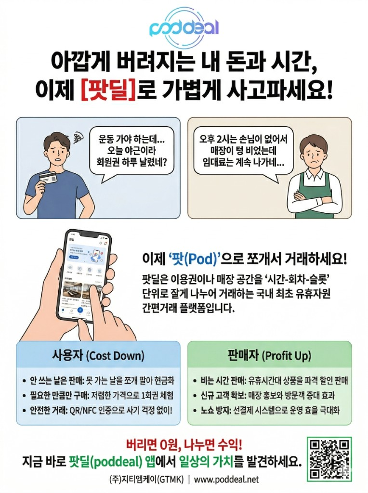

선결제 · 유휴시간 거래 플랫폼
Poddeal 팟딜
버려지던 시간이 수익이 되는 구조입니다.
헬스장·골프연습장처럼 선결제로 쓰는 서비스는 이용권의 약 20~30%가 사용되지 못하고 사라집니다. 소비자는 돈을 잃고, 사업자는 빈 시간을 그대로 두게 됩니다. 팟딜은 그 시간을 ‘팟(Pod)’ 단위로 나누어 못 가는 날은 판매하고, 다른 사람은 할인된 가격으로 이용할 수 있게 합니다.

팟딜이란
팟딜(Poddeal)은 버려지는 시간을 ‘팟(Pod)’ 단위로 나누어 거래할 수 있게 만든 플랫폼입니다. 못 가는 날은 판매하고, 다른 사람은 할인된 가격으로 이용합니다.
한 줄로 말하면, 버려지던 시간이 수익이 되는 구조입니다.
차별성
기존에는 이용권 전체를 넘겨야 해서 거래가 쉽지 않았습니다. 팟딜은 하루·한 시간처럼 잘게 나누어 거래할 수 있어, 예전에는 팔 수 없던 시간까지 거래가 가능합니다.
“헬스장이나 골프연습장, 결제해 놓고 끝까지 다 써보신 적 있으신가요?”
소비자 입장
“소비자는 돈을 잃고, 사업자는 빈 시간을 그대로 두게 됩니다.”
시장 구조
왜 성남인가
성남은 분당·판교를 중심으로 헬스·골프·뷰티 같은 생활 서비스 업종이 많이 모여 있습니다. 이 업종들은 대부분 선결제 구조라 사용하지 못하는 시간이 계속 발생합니다. 특히 직장인 중심 지역이라 일정 변화로 유휴 시간이 더 많이 생깁니다.
성남은 유휴 자원이 많이 발생하는 지역이고, 팟딜이 가장 잘 작동할 수 있는 도시입니다.
성장 전략
우선 성남 지역에서 시작해 헬스·골프·뷰티 업종 중심으로 시장을 만든 뒤, 이후 수도권으로 확장할 계획입니다. 장기적으로는 데이터를 기반으로 유휴 시간을 예측하고, 더 잘 팔리도록 만드는 플랫폼으로 발전시킵니다.
사업 구조 · 거래 흐름
구조는 단순합니다. 그리고 이 거래의 수익이 판매자에게도 쉐어됩니다.
- 사업자 유휴 시간 등록
- 이용자 할인 구매
- 플랫폼 거래 중개
기존에는 0원이던 시간이 추가 매출로 바뀝니다. 팟딜을 통해 유입된 이용자는 신규 고객으로 이어질 수 있습니다. 사업자는 매출과 고객을 동시에 확보할 수 있어 참여 유인이 충분합니다.
시간 단위 ‘팟’으로 이어지는 흐름
-
1
유휴 발생 · 등록
사업자 또는 회원이 쓰지 않는 시간·회차를 ‘팟’으로 등록합니다.
-
2
팟딜이 중개
검증·결제·이용 연계를 플랫폼이 맡고, 수익을 구조에 맞게 배분합니다.
-
3
지역 소비자가 할인 구매
필요한 슬롯만 골라 이용하고, 매장에는 새로운 방문이 연결됩니다.
누구에게 어떤 혜택이 있나요?
발표에서 정리한 것처럼, 이용자는 부담을 줄이고 판매자는 빈 시간을 매출·고객으로 바꿀 수 있습니다.
이용자 Cost Down
-
사용자
못 가는 날은 판매
쓰지 못하는 날·시간을 ‘팟’으로 나누어 판매해 현금으로 되돌립니다.
-
사용자
필요한 만큼만 할인 구매
전체 이용권이 아니라 슬롯 단위로, 낮은 부담으로 서비스를 이용합니다.
-
사용자
안전한 거래
QR·NFC 등 인증으로 부정 사용을 줄이고 거래를 보호합니다.
판매자 Profit Up
-
판매자
비는 시간이 추가 매출로
한산한 시간대 유휴 슬롯을 판매하고, 거래 수익이 판매자에게도 쉐어됩니다.
-
판매자
신규 고객으로 이어지는 유입
팟딜을 통해 들어온 이용자가 매장의 새로운 고객으로 연결될 수 있습니다.
-
판매자
선결제로 노쇼 부담 완화
선결제·예약 구조로 운영 효율을 높이고 빈자리 손실을 줄입니다.
AI로 더 똑똑한 팟딜
단기적으로는 성남·수도권에서 거래를 늘리고, 장기적으로는 데이터 기반으로 유휴 시간을 예측해 더 잘 팔리도록 만드는 방향과 맞닿아 있습니다. 미사용 예측·매칭부터 가격·운영·신뢰까지 AI가 이용자·판매자·플랫폼을 지원합니다.
이용자 관점
-
AI
미사용 예측 · 리쉐어 제안
과거 이용 패턴을 분석해 높은 확률로 쓰이지 않을 시간대를 짚어내고, ‘팟’ 등록으로 수익을 낼 수 있도록 알림을 보냅니다.
-
AI
초개인화 매칭 엔진
생활 반경·가격 선호 등을 학습해, 나에게 맞는 ‘팟’을 추천하고 구매로 바로 이어지게 합니다.
판매자 관점
-
AI
다이내믹 프라이싱
날씨·요일 등 실시간 변수를 반영해 최적 할인가를 제안하고 공실률을 낮춥니다.
-
AI
스마트 ‘팟’ 생성 도구
사진·URL만으로 정보를 파악하고, 상품 설명과 태그를 자동 생성해 등록을 단순화합니다.
-
AI
수요 예측 기반 운영 최적화
주간·월간 수요를 예측해 유휴가 예상되는 시간대에 ‘팟’ 등록을 미리 준비하도록 안내합니다.
플랫폼 · 신뢰
-
AI
신뢰 지수 · FDS
거래 이력을 학습해 신뢰 점수를 부여하고, 반복 노쇼 등 이상 행위를 탐지·차단합니다.
-
AI
AI 정산 · 분쟁 조정
데이터 검증과 리뷰·채팅 맥락을 분석해 환불·중재안을 제안, 갈등 해소를 돕습니다.
-
AI
상권 분석 · 광고 모듈
지역·시간대별 소비 트렌드를 분석해, 어떤 ‘팟’을 더 내면 좋을지 데이터 기반으로 제안합니다.
AI 로드맵 (요약)
- 2026 데이터 확보·자동화 — 판매자 등록 단순화(OCR·NLP 등), AI 데이터 파이프라인으로 거래·유휴 패턴 축적
- 2027 매칭·예측 고도화 — 추천·미사용 예측 알림으로 거래 회전율 극대화 (발표의 ‘유휴 예측’ 단계와 연계)
- 2028+ 시장 확장·수익화 — 다이내믹 프라이싱, B2B 상권 리포트 등 부가 가치
지역 소비를 다시 잇는 팟딜
팟딜은 버려지는 시간을 수익으로 바꾸고, 지역 내 소비를 다시 연결하는 플랫폼입니다.
성남에서 버려지는 시간을, 성남 안에서 돈으로 바꾸겠습니다.
앱·웹에서 팟딜을 만나 보시고, 도입·제휴 문의는 아래로 연락 주세요.
(요약) 성남의 유휴 시간을 쪼개 거래하고, 사업자는 추가 매출과 신규 고객을 얻으며 지역 내 소비를 다시 연결합니다.